LUZ Y COLOR
Venecia y la Italia septentrional, primera mitad del siglo XVI
Debemos atender ahora a otro gran centro del arte italiano, el primero en importancia después de Florencia: la orgullosa y próspera ciudad de Venecia. Ésta, cuyo comercio la mantenía en estrecha relación con Oriente, fue más lenta que otras ciudades italianas en aceptar el estilo del Renacimiento, la aplicación por Brunelleschi de formas clásicas en los edificios. Pero cuando lo adoptó, dicho estilo adquirió aquí nueva lozanía, un esplendor y una vivacidad que evocan tal vez más íntimamente que ninguna otra arquitectura de la edad moderna la magnificencia de las grandes ciudades mercantiles del período helenístico, Alejandría o Antioquía. Uno de los edificios más característicos de este estilo es la Biblioteca de San Marcos (ilustración 207). El arquitecto que la construyó fue un florentino, Jacopo Sansovino (1486-1570), que adaptó por completo su estilo y manera al genio local, a la luz radiante de Venecia reflejada en las lagunas y que deslumbra con su esplendor. Puede parecer pedante analizar así tan alegre y sencillo edificio, pero contemplarlo atentamente nos puede ayudar a ver con cuánta habilidad sabían entretejer esos maestros unos cuantos elementos sencillos dentro de esquemas siempre renovados. El piso más bajo, con su vigoroso orden dórico de columnas, se halla dentro de los más ortodoxos moldes clásicos. Sansovino siguió estrechamente en él las normas arquitectónicas ejemplarizadas por el Coliseo (ilustración 73). A la misma tradición obedeció el hecho de disponer el piso superior en orden jónico, sosteniendo el llamado ático con una balaustrada y coronando ésta con una hilera de estatuas. Pero en vez de dejar que los arcos de las aberturas entre los órdenes descansasen sobre pilares, como en el Coliseo, Sansovino los sostuvo sobre otra serie de columnillas jónicas, consiguiendo de este modo un exquisito efecto de órdenes entrelazados. Con sus balaustradas, guirnaldas y esculturas dio al edificio una apariencia de tracería, a la manera de las fachadas góticas de Venecia (ilustración 138).
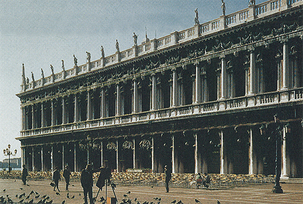
207 Jacopo Sansovino, Biblioteca de San Marcos, Venecia, 1536. Edificio del alto Renacimiento.
Este edificio es característico del gusto por el cual se hizo famoso el arte veneciano en el Cinquecento. La atmósfera de las lagunas, que parece esfumar los contornos precisos de los objetos y fundir sus colores en una luz radiante, pudo haber enseñado a los pintores de esta ciudad a emplear el color de manera más decidida y como fruto de la observación que a como lo habían hecho hasta el momento otros pintores italianos. Quizá los vínculos con Constantinopla, y con los artesanos que realizaban mosaicos, también tuvieran algo que ver con esta preferencia. Es difícil hablar o escribir acerca del colorido; una ilustración en color, a escala muy reducida respecto al original, no da una idea adecuada de la apariencia real de una obra maestra en color. Pero, al menos, parece evidente que los pintores del medievo no se preocuparon en mayor medida de la coloración «verdadera» de las cosas que de sus formas reales. En sus miniaturas, esmaltes y retablos gustaban de aplicar los colores más puros y preciosos, siendo su combinación preferida la del oro refulgente con el azul ultramar intenso. Los grandes reformadores florentinos se interesaban menos por el color que por el dibujo. Esto no quiere decir, claro está, que sus cuadros no fueran exquisitos por su color —ya que lo cierto es lo contrario—, pero fueron muy pocos los que consideraron el color como uno de los medios más importantes para conjugar dentro de un esquema unificado las figuras y formas diversas de un cuadro. Prefirieron conseguir esto mediante la perspectiva y la composición antes de mojar sus pinceles en la pintura. Los pintores venecianos, al parecer, no consideraron el color como un enriquecimiento adicional del cuadro después de haber sido dibujado éste sobre la tabla. Cuando se ingresa en la pequeña iglesia de San Zacarías de Venecia para situarse ante el cuadro (ilustración 208) que el gran pintor veneciano Giovanni Bellini (1431?-1516) pintó allí sobre el altar, en 1505, se advierte inmediatamente que su concepto fue muy distinto. No porque el cuadro sea de manera muy particular intenso y luminoso, sino más bien porque es la densidad y riqueza de los colores la que nos impresiona en cada uno de ellos antes, incluso, de que nos fijemos en lo que el cuadro representa. Creo que hasta la fotografía traduce algo de la atmósfera cálida y dorada que invade la hornacina en la que se halla sentada en su trono la Virgen con el Cristo niño levantando la mano para bendecir a los fieles ante el altar. Un ángel, sentado en las gradas del trono, toca quedamente el violín, mientras los santos permanecen en sosiego a ambos lados: san Pedro, con su llave y su libro; santa Catalina, con la palma del martirio y la rueda rota; santa Lucía; y san Jerónimo, el erudito que tradujo la Biblia al latín, y al que por ello representó Bellini leyendo un libro. Muchas vírgenes fueron pintadas antes y después en Italia y otros lugares, pero pocas se concibieron con tanta gravedad y tanto sosiego. En la tradición bizantina era costumbre enmarcar rígidamente la figura de la Virgen con las imágenes tradicionales de los santos (ilustración 89). Bellini supo introducir la vida en esta sencilla distribución simétrica sin romper el equilibrio; supo también convertir las figuras tradicionales de la Virgen y los santos en seres vivos, sin desposeerles de su carácter sagrado ni de su dignidad. No tuvo que sacrificar la diversidad ni la individualidad de la vida real, como en cierta medida hizo Perugino (ilustración 202). Santa Catalina, con su plácida sonrisa, y san Jerónimo, el viejo erudito absorto en el volumen que está leyendo, poseen vida por sí mismos, y sin embargo también parecen pertenecer, y no en grado menor que las figuras de Perugino, a otro mundo más bello y apacible, un mundo henchido de fervor por la luz sobrenatural que invade el cuadro.
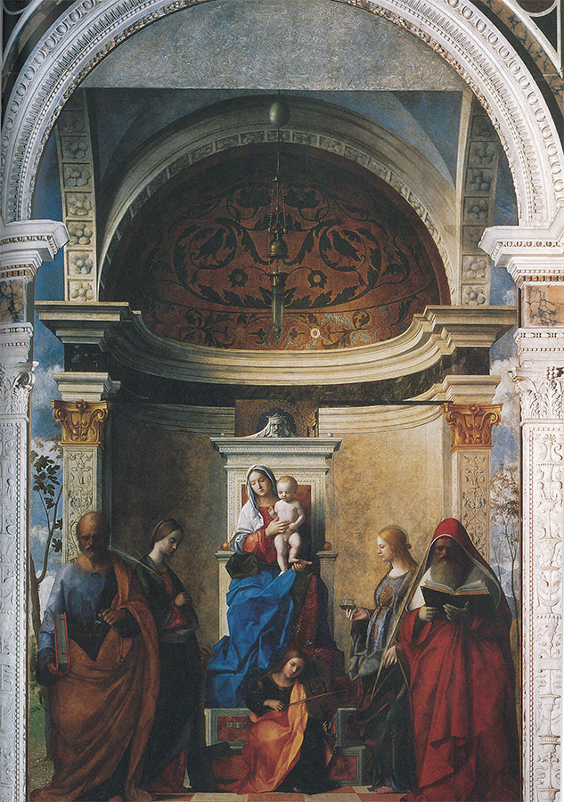
208 Giovanni Bellini, Madona con santos, 1505. Retablo; óleo sobre tabla, pasado a lienzo, 402 x 273 cm; iglesia de San Zacarías, Venecia.
Giovanni Bellini perteneció a la misma generación que Verrocchio, Ghirlandaio y Perugino, aquella cuyos discípulos y continuadores fueron los famosos maestros del Cinquecento. También él fue maestro de un taller extraordinariamente activo de cuya órbita emergieron los famosos pintores del Cinquecento veneciano Giorgione y Ticiano. Si los pintores clásicos de la Italia central consiguieron la nueva y completa armonización dentro de sus cuadros mediante la perfección del diseño y la disposición equilibrada, era natural que los pintores de Venecia siguieran la orientación de Giovanni Bellini, quien utilizó tan felizmente los esquemas de color para armonizar sus cuadros. En esta esfera fue en la que el pintor Giorgione (1478?-1510) consiguió los resultados más revolucionarios. Se sabe muy poco de este artista y tan sólo cinco obras le pueden ser atribuidas con certeza absoluta. No obstante, son suficientes para asegurarle casi tanto renombre como a las grandes figuras del nuevo movimiento. Lo sorprendente es que incluso esas obras tienen algo de acertijo. No sabemos del todo qué representa la más lograda de ellas, La tempestad (ilustración 209); podría ser una escena tomada de algún escritor clásico o imitador de los clásicos, pues en los artistas venecianos de la época prendió el encanto de los poetas griegos y de sus temas. Gustaban de ilustrar asuntos idílicos, pastorales, y de plasmar la belleza de Venus y de las ninfas. Algún día, el episodio a que este cuadro se refiere podrá ser identificado; tal vez se trate de la madre de un héroe futuro expulsada de la ciudad y que ha sido descubierta con su hijo en la soledad del campo por un pastor joven y amigable. Al parecer es esto lo que Giorgione se propuso representar; pero no es por su contenido por lo que este cuadro constituye una de las obras de arte más maravillosas. A qué obedece que así sea, es algo difícil de ver en una ilustración de reducido tamaño; pero incluso ésta refleja algo de lo que hay de revolucionario en ella. Aunque los personajes no están dibujados correctamente, y aunque la composición es un tanto desmañada, se ha logrado claramente una sencilla conjunción mediante la luz y el aire que alientan en el cuadro. Esta luz es la fantástica de una exhalación, y por vez primera, al parecer, el paisaje ante el que se mueven los protagonistas del cuadro no constituye exactamente un fondo, sino que está allí, por sí mismo, como verdadero asunto del cuadro. Vamos con la mirada de las figuras a la escena que ocupa la mayor parte del pequeño panel, de ésta a aquéllas nuevamente, y notamos que, a diferencia de sus predecesores, Giorgione no dibujó aisladamente las cosas y los personajes para distribuirlos después en el espacio, sino que consideró la naturaleza, la tierra, los árboles, la luz, el aire, las nubes y a los seres humanos con sus puentes y ciudades como un conjunto. En cierto modo, fue éste un paso hacia adelante en un nuevo dominio de casi tanta trascendencia como el de la invención de la perspectiva. A partir de ahora, la pintura habría de ser algo más que dibujo y color. Sería un arte con sus leyes ocultas y sus recursos propios.
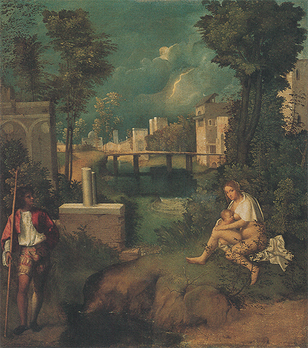
209 Giorgione, La tempestad, h. 1508. Óleo sobre lienzo, 82 x 73 cm; Academia, Venecia.
Giorgione murió demasiado joven como para cosechar todos los frutos de este gran descubrimiento. Quien los recogió fue el más famoso de todos los pintores venecianos: Ticiano (1485?-1576). Ticiano nació en Cadore, en los Alpes meridionales, y se dice que tenía noventa y nueve años cuando murió de la peste. Durante su prolongada existencia llegó a alcanzar una fama que casi igualó a la de Miguel Ángel. Sus primeros biógrafos nos dicen asombrados que hasta el emperador Carlos V le hizo el honor de recogerle del suelo un pincel que se le había caído. Puede no parecernos esto muy notable, pero si tenemos en cuenta las normas estrictas de la corte de aquella época, advertimos que la máxima personificación del poder terreno consideró que debía humillarse simbólicamente ante la majestad del genio. Vista así, la pequeña anécdota, sea cierta o no, habría de representar para las épocas posteriores un triunfo del arte. Tanto más cuanto que Ticiano no era un erudito tan universal como Leonardo, ni una personalidad tan sobresaliente como Miguel Ángel, ni un hombre tan atractivo y versátil como Rafael. Fue principalmente y por encima de todo pintor, pero un pintor cuyo manejo de los colores igualaba la maestría de Miguel Ángel en el dibujo. Esta suprema potestad le permitía desdeñar todas las reglas tradicionales de la composición, contando con el color para restablecer la unidad que, aparentemente, había roto. No necesitamos sino contemplar la ilustración 210 (que comenzó tan sólo quince años después del cuadro de Bellini Madona con santos) para darnos cuenta del efecto que su arte debió de producir en los contemporáneos. Fue algo casi inaudito situar a la Virgen fuera del centro del cuadro y colocar a los dos santos tutelares —san Francisco, al que se reconoce por los estigmas, y san Pedro, quien ha depositado la llave (emblema de su dignidad) sobre los peldaños del trono de la Virgen— no a ambos lados, simétricamente, como hiciera Bellini, sino como participantes activos en la escena. En este cuadro de altar, Ticiano revivió la tradición de los retratos de donantes (ilustración 143), pero de un modo completamente nuevo. El objeto de la pintura era constituir un testimonio de gratitud por la victoria conseguida contra los turcos por el notable veneciano Jacopo Pesaro, y Ticiano lo retrató arrodillado ante la Virgen, mientras un portaestandarte armado arrastra a un prisionero turco ante él. San Pedro y la Virgen le contemplan benévolos, mientras san Francisco, en el otro lado, llama la atención del Cristo niño hacia los otros miembros de la familia Pesaro que se hallan arrodillados en la esquina del cuadro (ilustración 211). Toda la escena parece tener lugar en un patio abierto, con dos gigantescas columnas que se elevan hasta las nubes, donde unos angelitos juguetean a sostener la cruz. Los contemporáneos de Ticiano seguramente quedaron sorprendidos ante la audacia de su atrevimiento. Debieron suponer, en un principio, que un cuadro semejante carecería de equilibrio. Y en realidad acaece lo contrario. La inesperada composición sólo contribuye a alegrarlo y vivificarlo sin romper en modo alguno su armonía. La principal razón de ello reside en el uso que Ticiano hizo de la luz, el aire y los colores para unificar la escena. La idea de dejar que un simple estandarte contrabalanceara la figura de la Virgen quizá hubiera sacado de quicio a los críticos de la generación anterior; pero este estandarte, con su intensa y cálida coloración, constituye tan estupendo trozo de pintura que la aventura triunfó por entero.
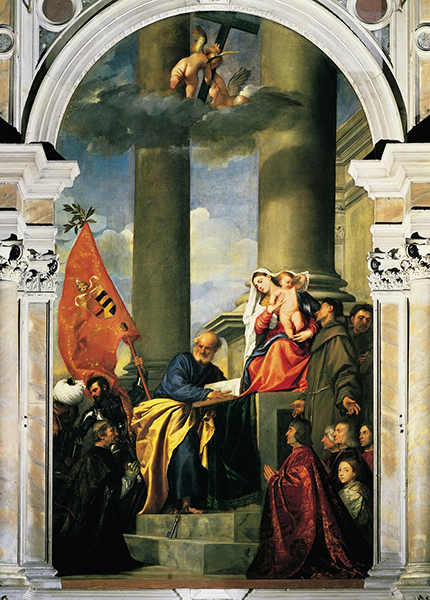
210 Ticiano, Madona con santos y miembros de la familia Pesaro, 1519-1526. Retablo; óleo sobre lienzo, 478 x 266 cm; iglesia de Santa Maria dei Frari, Venecia.
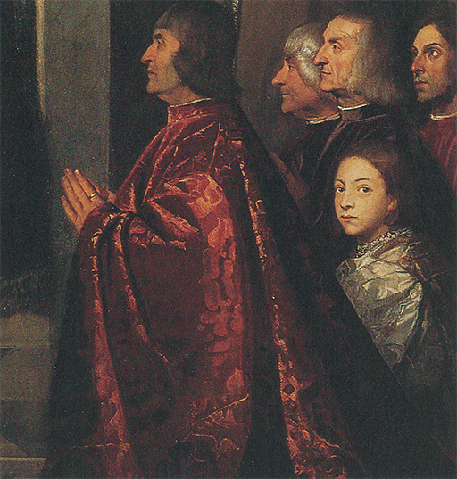
211 Detalle de la ilustración 210.
La mayor fama de Ticiano entre sus contemporáneos estribó en sus retratos. Con sólo observar una cabeza como la de la ilustración 212, denominada corrientemente El joven inglés, comprendemos tal fascinación. Será en vano que tratemos de buscar en qué consiste ésta. Comparado con los retratos primitivos, todo parece en éste sencillo y sin esfuerzo. No hay nada en él del minucioso modelado de Mona Lisa de Leonardo, y, sin embargo, este joven desconocido parece tan misteriosamente vivo como ella. Se diría que nos contempla con mirada tan intensa y espiritual que es casi imposible creer que esos ojos soñadores sean tan sólo dos motas de tierra coloreada sobre un basto trozo de tela (ilustración 213).
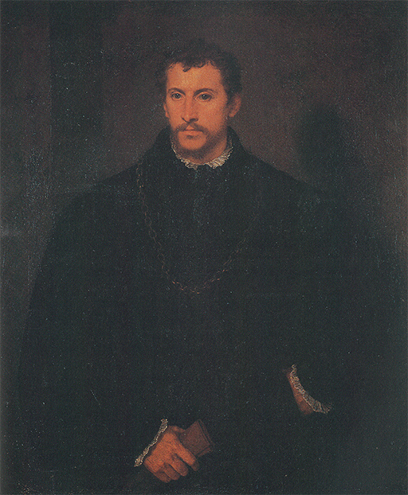
212 Ticiano, El joven inglés (Retrato de un hombre), h. 1540-1545. Óleo sobre lienzo, 111 x 93 cm; Palacio Pitti, Florencia.
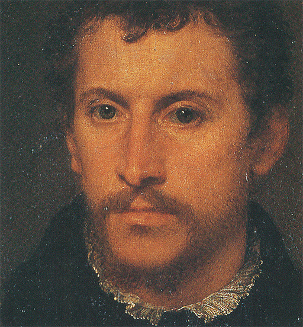
213 Detalle de la ilustración 212.
No es de extrañar que los poderosos de este mundo compitieran entre sí por el honor de ser pintados por este maestro. Y no es que Ticiano sintiera predilección por obtener un parecido especialmente lisonjero, sino que les convencía de que seguirían viviendo a través de su arte. Y ellos lo aceptaron, o así lo percibimos cuando nos situamos delante de su retrato del papa Pablo III en Nápoles (ilustración 214). Nos muestra a un gobernante de la Iglesia envejecido, girándose hacia un joven allegado, Alejandro Farnesio, quien está a punto de hacerle una reverencia mientras su hermano, Octavio, nos contempla sosegadamente. Es evidente que Ticiano conoció y admiró el retrato que hizo Rafael del papa León X con sus cardenales, pintado veintiocho años antes (ilustración 206), pero también se debió proponer superarlo en cuanto a energía y vitalidad. La reunión de estas personalidades es tan convincente y tan dramática que no podemos dejar de hacer conjeturas acerca de sus pensamientos y reacciones personales. ¿Están conspirando los cardenales? ¿Acaso intuye el Papa sus planes? Es probable que esas preguntas sean actualmente inútiles, pero quizá también se las formularon sus contemporáneos. El cuadro quedó inacabado cuando el maestro dejó Roma, pues se le requería en Alemania para pintar al emperador Carlos V.
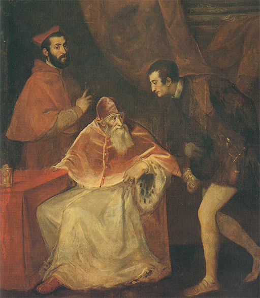
214 Ticiano, El papa Pablo III con Octavio y Alejandro Farnesio, 1546. Óleo sobre lienzo, 200 x 173 cm; Museo de Capodimonte, Nápoles.
No fue únicamente en grandes centros como Venecia donde los artistas se adelantaron a descubrir nuevos métodos y posibilidades. El pintor que fue considerado en las generaciones siguientes como el más progresista y osado innovador de todo el período vivió solitario en Parma, la pequeña ciudad de la Italia septentrional. Su nombre fue Antonio Allegri, llamado Correggio (1489?-1534). Leonardo y Rafael habían muerto y Ticiano ya había alcanzado su fama cuando Correggio pintó sus obras más importantes; pero ignoramos hasta dónde llegaban sus conocimientos acerca del arte de su época. Probablemente tuvo alguna ocasión de estudiar en las ciudades vecinas del norte de Italia las obras de algún discípulo de Leonardo y asimilar su modo de tratar la luz y las sombras. En este aspecto logró efectos enteramente nuevos, los cuales influyeron grandemente en las escuelas de pintura posteriores.
La ilustración 215 muestra uno de sus cuadros más famosos, La natividad. El talludo pastor acaba de tener la visión del cielo abierto en el que cantan los ángeles su Gloria a Dios en las alturas: los vemos revolotear alegremente entre las nubes y mirar hacia abajo, hacia la escena que enmarca el pastor con su largo bastón. Entre las oscuras ruinas del pesebre ve el milagro: el Cristo niño recién nacido que irradia luz en torno, iluminando el beatífico rostro de la feliz madre. El pastor reprime su movimiento y tantea buscando su gorra, pronto a arrodillarse y adorar. Hay dos doncellas, una deslumbrada por la luz de la cuna, y la otra mirando arrobada hacia el pastor. San José, en la profunda oscuridad del exterior, anda atareado con el asno.
A primera vista, la distribución parece espontánea y natural. La sobrecargada escena del lado izquierdo no parece equilibrada por otro grupo que se corresponda con aquél en el lado derecho. El equilibrio sólo se establece mediante el relieve que da la luz al grupo de la Virgen y el Cristo niño. Correggio explotó más aún que Ticiano el descubrimiento según el cual la luz y el color pueden ser empleados para contrabalancear las formas y conducir nuestras miradas a lo largo de ciertas líneas. Por eso nos precipitamos en la escena con el pastor y se nos hace ver lo mismo que él está viendo: el milagro de la luz que rasga la oscuridad, de lo que habla el evangelio de san Juan.
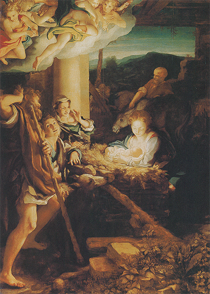
215 Correggio, La natividad, h. 1530. Óleo sobre tabla, 256 x 188 cm; Galería de Pintura de Maestros Antiguos, Dresde.
Existe una modalidad en la obra de Correggio que fue imitada durante todos los siglos subsiguientes: su manera de pintar los techos y cúpulas de las iglesias, tratando de producir en los fieles la ilusión de que el techo se abre y sus miradas penetran en la gloria celestial. Su dominio de los efectos de luz le permitió llenar las techumbres con nubes bañadas por el sol, entre las cuales los celestes moradores parecen girar con sus piernas suspendidas hacia abajo. Esto acaso no parezca muy respetuoso y, efectivamente, hubo quien puso objeciones en su época; pero cuando nos hallamos en la oscura y sombría catedral medieval de Parma y miramos hacia la cúpula, la impresión es, no obstante, extraordinaria (ilustración 217). Desgraciadamente, esta clase de efectos no puede ser reproducida en una ilustración. Por esto, tenemos la suerte de que todavía nos queden algunos de sus dibujos preparatorios. La ilustración 216 muestra su primera idea para el personaje de la Virgen ascendiendo sobre una nube y mirando con asombro el cielo radiante que la espera. El dibujo es, desde luego, mucho más fácil de interpretar que la figura en el fresco, que incluso está más contorsionada. Además, nos permite apreciar con qué simplicidad de medios podía sugerir Correggio un torrente tal de luz mediante unos cuantos trazos en sanguina.
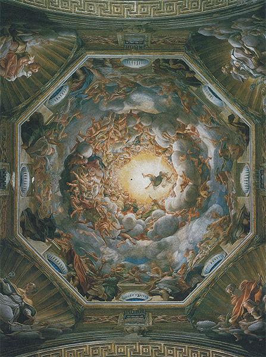
217 Correggio, La asunción de la Virgen. Fresco; cúpula de la catedral de Parma.
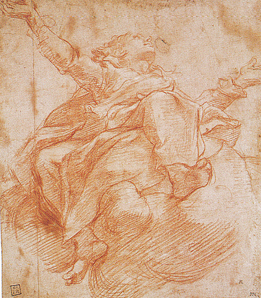
216 Correggio, La asunción de la Virgen: estudio para la cúpula de la catedral de Parma, h. 1526. Sanguina sobre papel, 27,8 x 23,8 cm; Museo Británico, Londres.
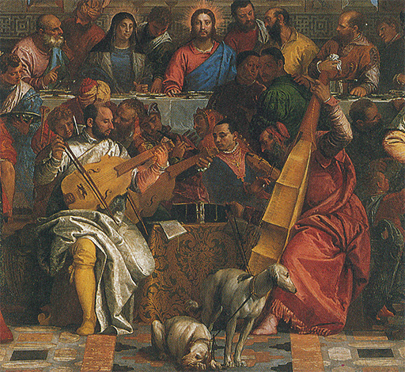
Paolo Veronese, Las bodas de Caná detalle: (orquesta de pintores venecianos, 1562-1563. Óleo sobre lienzo; de izquierda a derecha: Paolo Veronese (con viola tenor), Jacopo Bassano (con corneta triple), Tintoretto (con lira de brazo o violín), y Ticiano (con viola baja); Museo del Louvre, París.